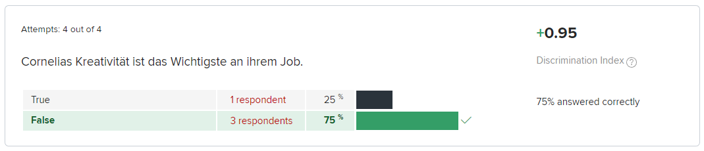
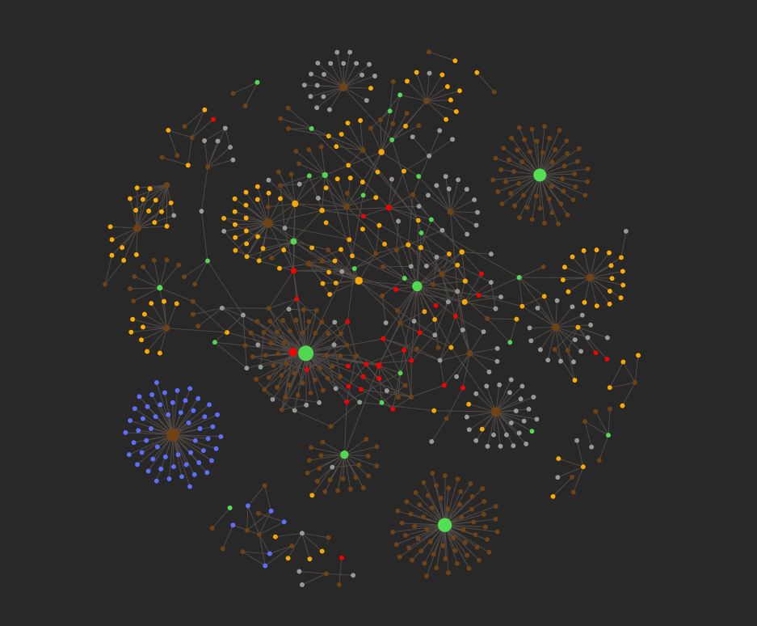

Portfolio
German Instructor
Introduction
As an instructor of college-level German language and culture, my experience with instructional design (ID) revolved around the end-goal of teaching a classroom of students how to speak German. To achieve this, I used a communicative, learner-centered approach that maximized instructional time by conducting the entirety of the 55-minute class in the target language.
Although my approach to ID outside of academia would addresses a different kind of learning goal, I still find an approach that gives the learner hands-on experience of the material extremely compelling.
Instructor-Led PowerPoint
When creating such a presentation, I keep the following in mind (please, follow along with the PPT below):
1. When teaching a new skill like a foreign language, proper signposting and scaffolding is imperative; therefore, I begin and end the lessons by clarifying the “learning goals” (Learnziele) for the session.
2. Many lessons begin with the acquisition of new vocabulary and terminology. In this presentation on sports, I found it helpful to begin with something familiar; German has a number of words for sports that are identical to their English counterparts. Following this, I introduce less familiar vocabulary, repeating each word aloud for my students and prompting them to repeat it. While average learners can absorb at most seven new pieces of information in one session, I introduce ten new words since I will work with similar information for the remainder of the week.
3. Before putting the new vocabulary to use, I include a review slide. Without the accompanying words, I quiz the students briefly on the new vocabulary.
4. Following this, I present the students with two videos to exercise their listening skills. I assess their understanding by asking questions about each video's content.
5. For the remainder of the presentation, I focus on having the students speak as much as possible. For each dialogue or question, I first model the interaction for the students, then turn the activity over to them. Note how each activity becomes gradually more reliant on the learners’ memory; earlier activities provide a word bank for reference, while later ones do not.
6. By the end of the presentation, the students are growing comfortable with the new sports vocabulary; therefore, I combine the new words with older structures for review.
Learning Management System Structure
I used Canvas LMS to organize the course’s files, communicate with students, facilitate discussions, and evaluate student progress. When organizing the materials for language courses, I divided course content into weekly modules for ease of access.
The integration of Echo 360 with Canvas LMS enabled me to stream class live to absent students and to record classes for later reference. This was an invaluable asset during the pandemic. It allowed class to be in an in-person format for healthy students and in a temporarily hybrid format for those absent.
Self-Paced Materials
While teaching Ohio State’s Individual Instruction German course, I took initiative to update the individual instruction system to the (at the time) newly implemented Canvas LMS. Prior to my intervention, student evaluations were tabulated manually, costing department personnel a great deal of time. In Canvas LMS, I was able to create self-grading quizzes which only required instructor intervention on select questions, if at all. The LMS's built-in discrimination index was especially useful when analyzing whether questions were effective at evaluating student performance.
Dissertation
While working on my dissertation, I honed numerous soft-skills that contribute to my ability as an effective instructional designer.
In order to ensure my understanding of complex subject matter, I often employed the Feynman Technique (e.g. ensuring that I could articulate my understanding to someone else). I have transferred my experience with the Feynman Technique into classroom activities numerous times to great success. This method not only checks for learner understanding, but often deepens and reinforces the knowledge of those who have begun to grasp the material.
While writing my dissertation, I was constantly required to seek out and incorporate new information into the project. I had often suffered from having a cluttered workspace, littered with books, articles, and sticky notes. That changed once I began reflecting on the process of knowledge acquisition and maintenance itself. I began exploring what techniques others used in re personal knowledge management, eventually settling on Niklas Luhmann’s Zettekasten technique. This note-taking system relies on the user to take notes, not only on the content of new information, but also on how that information relates to one’s other projects and ideas. In other words, a Zettekasten is similar to a personal knowledge wiki.
Though its content does not pertain to my application, please accept my dissertation as evidence of my ability to pursue complex projects:
In my dissertation, “Melancholy and the Photo-Historical Approach in the Films of Wim Wenders,” I examine the influence of the thinkers of “redemptive realism” on Wenders’ work. Through this thematic and formal engagement with melancholy—understood as a combination of social isolation and self-estrangement that cyclically perpetuates itself—Wenders enters into a discussion about photographic mediation that spans the twentieth century. While Béla Balázs, Walter Benjamin, Roland Barthes, and Rudolf Arnheim contribute to this discourse, I root my understanding of melancholy primarily in the film theory with which Wenders is most familiar, in particular, Siegfried Kracauer’s Theory of Film: The Redemption of Physical Reality and his subsequent work, which expands on film’s relationship to time, History: The Last Things Before the Last. This theoretical perspective that I call the “redemptive realist tradition” emphasizes film’s documentary capability to mediate an encounter with phenomena that would otherwise elude perception, thereby “redeeming” them in Kracauer’s vocabulary through what I call his “photo-historical approach.” I find that this approach and the process of resolving melancholy parallel one another, thereby offering Wenders’ characters the chance to redeem the phenomena of their perception while overcoming their estrangement and isolation.
If you would like to examine the project in more detail, please follow the monogram link below.